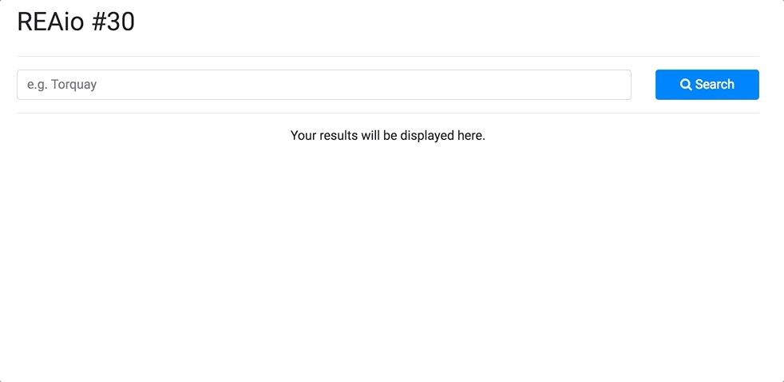

Find listings in surrounding suburbs with PostGIS
One of the most common use cases in anything that is geo-referenced (properties, stations, rooms, airports, …) is the expansion of query results with "surrounding suburbs". Basically, when you look for a room in, let's say, Torquay, you also want to visualize relevant results in Bells Beach, Jan Juc, Breamlea and so forth and so on.
There are many possible solutions to this problem, each with its own pro and cons of course. The solution described in this post involves PostgreSQL and its geospatial extension, PostGIS. The idea is simple: you store a map with all the suburbs into your DB and then you use it as a normal table to perform join with other entities in order to geo-filter the results.
Cool, right?
What's this PostGIS again?
According to the official website, PostGIS "is a spatial database extender for PostgreSQL object-relational database. It adds support for geographic objects allowing location queries to be run in SQL". From the point of view of a machine, a map is just a composition of layers, stacked one on top of the other, and each layer is a collection of points and lines (or pixels, for raster layers). Those who are not familiar with GIS concepts can refer to this link for an oversimplified crash course. 🙂
Now, if a layer is just a collection of points and lines, it is possible to easily store it in a DB. Once the data is in, you can query and analyze it, and that's where you want to use PostGIS. This project will just scratch the surface of what you can do with geospatial data. To have a broader idea of the possibilities, check the list of PostGIS features.
Install the extension
The first thing you need to do is, well, install PostGIS! You can refer to the project's Dockerfile for the full example. To install PostGIS in Ubuntu, just run:
apt-get install -y postgis postgresql-9.3-postgis-2.1
Once you have PostGIS, you need to add the extension to the DB. I did that in the initialization script:
CREATE EXTENSION postgis;
CREATE EXTENSION postgis_topology;
To confirm that everything's ok, you can run the following query:
SELECT PostGIS_full_version();
Which will give you something like that:
POSTGIS="2.1.2 r12389" GEOS="3.4.2-CAPI-1.8.2 r3921" PROJ="Rel. 4.8.0, 6 March 2012" GDAL="GDAL 1.10.1, released 2013/08/26" LIBXML="2.9.1" LIBJSON="UNKNOWN" TOPOLOGY RASTER
(1 row)
Store the layer
Our DB is ready to accept geospatial queries now, the only thing we need is… data! To store the data in the DB, we're going to use GDAL, a collection of functions to manipulate spatial data. Once we've installed GDAL:
apt-get install -y gdal-bin
we can execute the following command that will create a table in the DB and store the geometries in it:
ogr2ogr -f "PostgreSQL" PG:"dbname=app_test" suburbs.shp -nln suburbs -nlt PROMOTE_TO_MULTI -overwrite
A simple count will be enough to test that everything's ok:
SELECT COUNT(*) FROM suburbs;
count
-------
1629
(1 row)
SQL for "Surrounding Suburbs"
We now have our map stored in the DB, and we also have a bunch of listings that we want to query. So, how do I find all the listings in the suburb of interest and in the vicinity? Let's make it easier: how do I find all the surrounding suburbs of a given place? Well, PostGIS comes with a set of useful functions, in particular ST_Intersect. For example, the following query:
SELECT b.ssc_name
FROM suburbs a
JOIN suburbs b ON ST_INTERSECTS(a.wkb_geometry, b.wkb_geometry)
WHERE a.ssc_name = 'Torquay';
will return all the surrounding suburbs of Torquay:
ssc_name
------------------
Bellbrae
Breamlea
Connewarre
Freshwater Creek
Jan Juc
Mount Duneed
Torquay
(7 rows)
Almost there! We can now use this subquery in the WHERE condition of the real query:
SELECT *
FROM listings l
WHERE l.suburb IN (
SELECT b.ssc_name
FROM suburbs a
JOIN suburbs b ON ST_INTERSECTS(a.wkb_geometry, b.wkb_geometry)
WHERE a.ssc_name = 'Torquay'
);
Something doesn't look right
The aforementioned query will give us a set of listings from Torquay and the surrounding suburbs, as shown below:
Something doesn't look right though. If you check the list, you will notice that the listings are in the right set of suburbs, but the ones in Torquay do not show at the top of the list. How to fix that? One solution may be to order the results based on the distance from the suburb selected by the user. But, how do we measure this distance? Also, distance from… where?
Centroids to the rescue
What we can do is to measure the distance between the location (latitude and longitude) of each listing, and the centroid of the suburb requested by the user. We need to modify the DB to do so, and PostGIS will help us again! We can combine ST_X, ST_Y and ST_Centroid to automatically calculate the centroid for each polygon in the DB:
ALTER TABLE "suburbs" ADD lon double precision;
UPDATE "suburbs" SET lon = ST_X(ST_Centroid(wkb_geometry));
ALTER TABLE "suburbs" ADD lat double precision;
UPDATE "suburbs" SET lat = ST_Y(ST_Centroid(wkb_geometry));
You can run a simple SELECT * FROM suburbs LIMIT 5 query to verify that each record now has latitude and longitude.
The final query
We can now modify the original query to include a simple ORDER BY, using two more PostGIS functions, ST_MakePoint and ST_Distance:
SELECT *
FROM listings l
WHERE l.suburb IN (
SELECT b.ssc_name
FROM suburbs a
JOIN suburbs b ON ST_INTERSECTS(a.wkb_geometry, b.wkb_geometry)
WHERE a.ssc_name = 'Torquay'
)
ORDER BY ST_Distance(ST_MakePoint((SELECT lon FROM suburbs WHERE ssc_name = 'Torquay'), (SELECT lat FROM suburbs WHERE ssc_name = 'Torquay')), ST_MakePoint(l.lon, l.lat)) ASC;
We can finally filter by suburb AND "boost" our suburb of interest to the top of the list!

Conclusions
This post describes how to combine geospatial and non-geospatial data to enrich queries with geographic capabilities taking advantage of the PostGIS extension. The project has been implemented with Docker and Docker Compose, with Ruby on Rails for the web part (although you can use everything, considering that the core part is the DB), and PostgreSQL and PostGIS for the persistence layer.
Links
- Source code: https://github.com/Kalimaha/surrounding-suburbs
- PostGIS: https://postgis.net/
- GDAL: http://www.gdal.org/